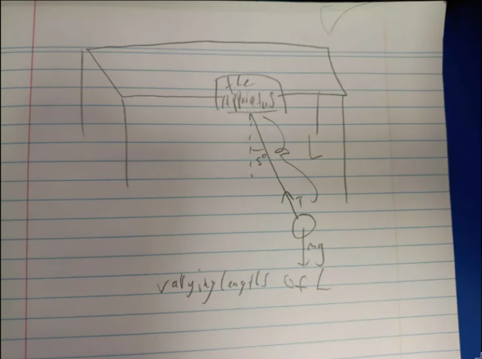
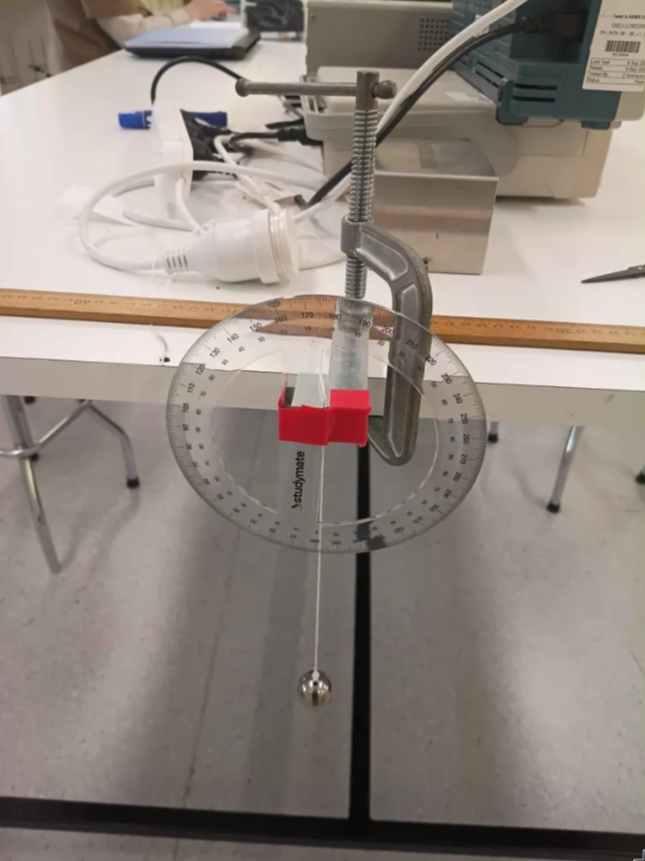
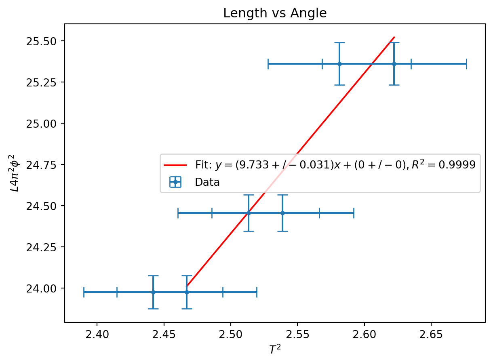
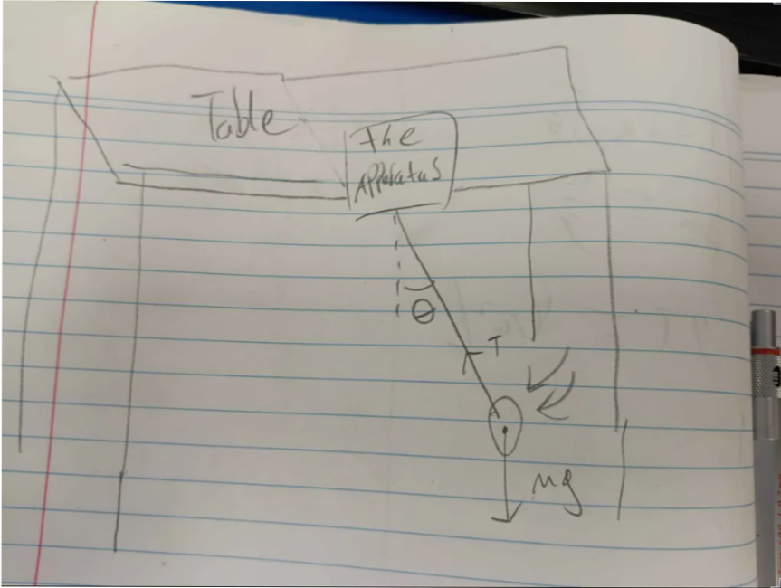
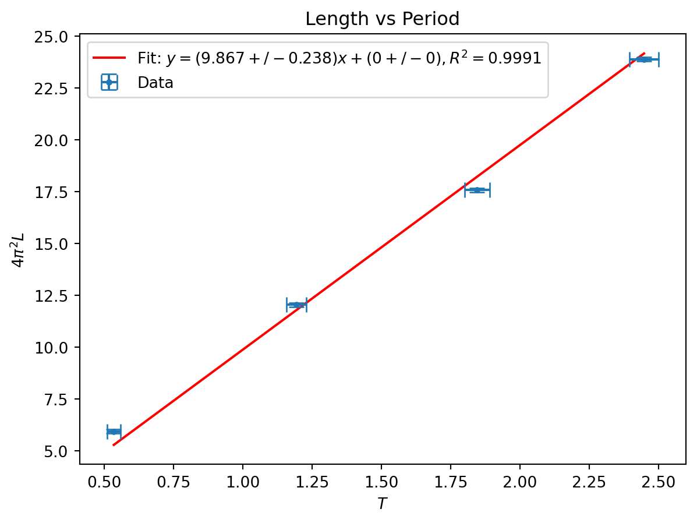

import warnings
from math import pi
import matplotlib.pyplot as plt
import numpy as np
from scipy import odr
from uncertainties import UFloat, ufloat
warnings.filterwarnings("ignore", category=FutureWarning, module="uncertainties")
warnings.filterwarnings(
"ignore", category=UserWarning, message="Using UFloat objects with std_dev==0"
)
def fit_odr(x: list[UFloat], y: list[UFloat], zero_intercept: bool = False):
x_nom, x_err = [v.n for v in x], [v.s for v in x]
y_nom, y_err = [v.n for v in y], [v.s for v in y]
data = odr.RealData(x_nom, y_nom, sx=x_err, sy=y_err)
if zero_intercept:
model, beta0 = odr.Model(lambda p, x: p[0] * x), [1]
else:
model, beta0 = odr.Model(lambda p, x: p[0] * x + p[1]), [1, 0]
out = odr.ODR(data, model, beta0=beta0).run()
slope = ufloat(out.beta[0], out.sd_beta[0])
intercept = (
ufloat(out.beta[1], out.sd_beta[1]) if not zero_intercept else ufloat(0, 0)
)
y_pred = model.fcn(out.beta, np.array(x_nom))
ss_res = np.sum((np.array(y_nom) - y_pred) ** 2)
ss_tot = np.sum(
np.array(y_nom) ** 2
if zero_intercept
else (np.array(y_nom) - np.mean(y_nom)) ** 2
)
r_squared = 1 - ss_res / ss_tot
return slope, intercept, r_squared
def compsigma(a, b):
return abs((a.n - b.n) / ((((a.s**2) + (b.s**2)) ** (1 / 2))))Bryce Tabangcura - PHYS1201 Lab Week 3
Lab partner: haven bunter-gooley
Prelab Questions
Question 1
\[T = 2\pi\sqrt{\frac{L}{g}}\] \[\frac{T}{2\pi} = \sqrt{\frac{L}{g}}\] \[\frac{T^2}{4\pi^2} = \frac{L}{g}\] \[g = \frac{4\pi^2L}{T^2}\]
Question 2
\[g\pm\sigma_g = \frac{4\pi^2(L\pm\sigma_L)}{(T\pm\sigma_T)^2}\] \[\pm\sigma_g = \frac{4\pi^2(L\pm\sigma_L)}{(T\pm\sigma_T)^2} - g\] \[\sigma_g = \pm(\frac{4\pi^2(L\pm\sigma_L)}{(T\pm\sigma_T)^2} - g)\] I’m using uncertainties python library, so this is what I should be doing, or I mean to say this is the most granularity I need
Experiment 1
Aim
The aim of this experiment is to measure the period of a rigid pendulum with respect to some initial angle of the pendulum to highlight the connection between gravity and the angle of the pendulum.
Method
The setup is simple. First we construct a rigid pendulum. our current setup attaches the apparatus to a table with a clamp.
See the image or diagram for the setup.


The image above applies for both experiment 1 and 2.
Then we will measure the length of the pendulum.
By eye, we will dangle the pendulum to our initial measuring angle, in our experiment this being 10 degrees.
We will then measure the time it takes for the pendulum to swing fully 15 times. Once we measure this time, we can take our measurement and divide it by 15 to get the period for each swing.
The same person that swings the pendulum should be the same person to start the timer, as they can let go of the pendulum as soon as they start the timer, minimizing human error.
We will repeat this process for as many angles as we are measuring/ This being 10, 25, and 40 twice.
Results
All results were recorded and interpreted in python. Lets start with the python preamble
First start with our imports and helper functions. The imports are standard and the two helper functions are to fit to a linear equation and to measure the sigma between two ufloats.
To reiterate, fit_odr is a function that takes a list of x and y and returns the slope, intercept and r squared value of a linear equation fit to the equation.
Our measured length for the pendulum was 60.5cm, we were aiming for 60cm, but figuredit would be easier to get close and measure the length. We will assume a measurement uncertainty of one centimeter.
We measured in increments of 0.5cm, so this is just half the increment.
length = ufloat(60.5, 0.25) / 100 # m
print(length)0.6050+/-0.0025Then our results, I record my results in a list of tuples. The first value of each tuple being the time taken for the pendulum to swing 15 times, and the second value being the starting angle of the pendulum
total_time_swings_theta: list[tuple[float, float]] = [
(23.56, 10),
(23.44, 10),
(23.9, 25),
(23.78, 25),
(24.1, 40),
(24.29, 40),
]What we want is an equation is the form \(y = mx\) plus maybe some c.
Lets start with equation 4. \[T = 2\pi\sqrt{\frac{L}{g}}\times (1+\frac{1}{16}\theta_0^2)\] let \[\phi = 1+\frac{1}{16}\theta_0^2\]
\[T = 2\pi\sqrt{\frac{L}{g}}\phi\] \[\frac{T}{2\pi\phi} = \sqrt{\frac{L}{g}}\] \[\frac{T^2}{4\pi^2\phi^2} = \frac{L}{g}\] \[L4\pi^2\phi^2 = gT^2\] or in other words \[y = mx\] where \(y = L4\pi^2\phi^2\), and \(x = T^2\)
Lets calculate it then
First lets get the list of periods. We choose an uncertainty of 0.25 seconds for our seconds measurements. If you look at our measurements, our differences for the same angles are ~0.25 seconds, so its safe to assume that human measurement accuracy for a timer to be ~0.25. This is also nearing human reaction time.
total_period = [ufloat(x[0], 0.25) for x in total_time_swings_theta]
# time uncertainty of 0.25 methinks
periods = [x / 15 for x in total_period]
# A whole degree uncertainty measurement
print(periods)[1.5706666666666667+/-0.016666666666666666, 1.5626666666666666+/-0.016666666666666666, 1.5933333333333333+/-0.016666666666666666, 1.5853333333333335+/-0.016666666666666666, 1.6066666666666667+/-0.016666666666666666, 1.6193333333333333+/-0.016666666666666666]then the list of phi’s (I spelt phi wrong please ignore for the rest of the document)
We are choosing an uncertainty of 1 degree for the measurement. Normally since the protractor measures in increments of 1, you should choose half that increment so half a degree, but its exceedingly difficult to get 1 degree correct, and even dropping the pendulum might push it back and change the degrees. We chose a whole increment for the angle.
thetas = [ufloat(np.deg2rad(x[1]), np.deg2rad(1)) for x in total_time_swings_theta]
fi = [1 + (1 / 16) * (x**2) for x in thetas]
print(fi)[1.0019038588736668+/-0.0003807717747333857, 1.0019038588736668+/-0.0003807717747333857, 1.0118991179604182+/-0.0009519294368334644, 1.0118991179604182+/-0.0009519294368334644, 1.0304617419786708+/-0.0015230870989335428, 1.0304617419786708+/-0.0015230870989335428]From that we can get x and y and fit a linear relationship to them, note that we are assuming the zero intercept for this relationship. since.
x = [T**2 for T in periods]
y = [length * 4 * (pi**2) * (fi[n]**2) for n in range(len(periods))]
a, b, c = fit_odr(x, y, zero_intercept=True)
print(a, b, c)9.733+/-0.031 0.0+/-0 0.9999474984938824From this we get a value of gravity that is \(9.59 \pm 0.06\)
We can also graph this
first = x[0].n
last = x[-1].n
plt.plot(
[first, last],
[first * a.n + b.n, last * a.n + b.n],
"r-",
label=f"Fit: $y = ({a:.4g})x + ({b:.4g}),R^2 = {c:.4f}$",
)
plt.errorbar(
[v.nominal_value for v in x],
[v.nominal_value for v in y],
xerr=[v.std_dev for v in x],
yerr=[v.std_dev for v in y],
capsize=5,
linestyle="none",
marker="o",
markersize=3,
label="Data",
)
plt.title("Length vs Angle")
plt.xlabel("$T^2$")
plt.ylabel("$L4\pi^2\phi^2$")
plt.legend()
plt.show()
plt.close()<>:25: SyntaxWarning: invalid escape sequence '\p'
<>:25: SyntaxWarning: invalid escape sequence '\p'
/tmp/nix-shell.ktyWe9/ipykernel_334990/3875014684.py:25: SyntaxWarning: invalid escape sequence '\p'
plt.ylabel("$L4\pi^2\phi^2$")
So yeah, its ugly. But This is to be expected. This is because we are not directly measuring T and Theta, we are measuring an algebra changed x and y, we shrinked the data range and we got a big error bars. This is just a consequence of the method.
Plus our R squared value is really high at least
Conclusions
Our measured values are slightly off compared to the real associated values of Canberra’s gravity.
Its likely due to a combination of drag, length measurement error and time measurement error. The biggest proponents being time measurement and length measurement.
Lets use one of our data values for example We directly plugging into the equation get a value of 9.72 for gravity.
print(periods[0])
print(fi[0])
print(length * 4 * (pi**2) * (fi[0] ** 2) / (periods[0] ** 2))1.571+/-0.017
1.0019+/-0.0004
9.72+/-0.21If we instead mismeasured our periods by JUST 0.1 seconds forwards, we get a value of 8.59. thats more than 10% off just from 0.1 seconds, 0.1 seconds being much larger than human error, but still showing the extent of how such little changes can affect/skew the results.
print(length * 4 * (pi**2) * (fi[0] ** 2) / ((0.1+periods[0]) ** 2))8.59+/-0.18And it shows why those error bars can be so big.
Moving on, our value is 2 sigma away from the expected number of 9.7976. We also assume that the canberra figure has no uncertainty whatsoever. This is < 3 sigma meaning our results corroborate with the real world value.
print(compsigma(a, ufloat(9.7976, 0)))2.0588814062652165Experiment 2
Aim
The aim of this experiment is to measure the period of a rigid pendulum with respect to the length of the pendulum. highlight the connection between gravity and the length of the pendulum.
Method
The setup is simple. First we construct a rigid pendulum. our current setup attaches the apparatus to a table with a clamp.
See the following diagram (or recommendedly check the image from experiment 1)

What happens first is we attach the string at a reasonable length distance of pendulum. Our initial starting length goal was 60cm.
It’s best not to get to 60cm, its best to choose a goal, get near it and measure it. Our actual length value was 60.5. We chose this approach because its the faster approach. Also measure in increments of 0.5cm.
Then swing the pendulum, same as last experiment, the person to drop the pendulum should be the person to start the timer. Count to 15 swings and record the time it takes. this will be divided by 15 to get the full measurement.
Then repeat this for all lengths wished to be measured, our lengths being 15, 30, 45, 60
Results
Again, all done in python
Recorded in a list of tuples, where the first value of the tuples is the time taken to swing 15 times, and the second value is the length measurement.
total_time_swings_length: list[tuple[float, float]] = [
(23.47, 60.5),
(20.38, 44.5),
(16.39, 30.5),
(10.97, 15),
]First create a list of period and lengths, we assumed our time measurement of the total time taken to swing 15 times to be 0.25, same as last time, we chose this value arbitrarily, for the same reasons as last experiment.
We also chose an uncertainty for the lengths of 0.25cm. as we are measuring in increments of 0.5cm, we choose half of the increment.
periods = [ufloat(x[0], 0.25) / 15 for x in total_time_swings_length]
lengths = [ufloat(x[1], 0.25) / 100 for x in total_time_swings_length]Lets circle back to the maths
\[T=2\pi\sqrt{\frac{L}{g}}\] Fully simplifying down (skipping steps) \[gT^2=4\pi^2L\] So we can take \(x=T\) and \(y=4\pi^2L\)
And doing that in python
x = [x**2 for x in periods]
y = [4 * (pi**2) * x for x in lengths]
e, f, g = fit_odr(x, y, zero_intercept=True)
print(e)9.87+/-0.24We get a value of \(9.87\pm0.24\) Which is well within expectations, and fits with canberra, being under 3 sigma away.
print(compsigma(e, ufloat(9.7976, 0)))0.29298755273943666Only 0.29 sigma away.
We can also graph our x and y values
first = x[0].n
last = x[-1].n
plt.plot(
[first, last],
[first * e.n + f.n, last * e.n + f.n],
"r-",
label=f"Fit: $y = ({e:.4g})x + ({f:.4g}),R^2 = {g:.4f}$",
)
plt.errorbar(
[v.nominal_value for v in x],
[v.nominal_value for v in y],
xerr=[v.std_dev for v in x],
yerr=[v.std_dev for v in y],
capsize=5,
linestyle="none",
marker="o",
markersize=3,
label="Data",
)
plt.title("Length vs Period")
plt.xlabel("$T$")
plt.ylabel(r"$4\pi^2L$")
plt.legend()
plt.show()
plt.close()
So our regression very close, R squared being 0.9991.
And this graph looks much better than the last, solely due to the equation being much nicer in comparison with the measurements.
Conclusions
Our two values agree with eachother, being 0.56 sigma away from eachother, that being <3 sigma
print(compsigma(a, e))0.560304762495111Altogether two good experiments.